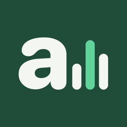

Støtte
Apropos
Apropos gjør norsk tale om til tekst rett på iPhonen. Lyden behandles på telefonen og sendes ikke ut, med mindre du selv kobler til en ekstern tjeneste.
Apropos er et uavhengig prosjekt, laget av en privatperson.
Kontakt
Spørsmål, feil eller ønsker: marius.husnes@gmail.com
Vanlige spørsmål
- Hvilke iPhoner fungerer appen på?
- Appen krever iOS 26. Talemodellen trenger omtrent 1,6 GB ledig minne mens den transkriberer, og «Finn ut hvem som snakker» trenger noe mer. Har telefonen for lite ledig minne, sier appen fra, og da kan du bruke et eksternt API under Innstillinger → Modeller.
- Hvorfor er appen så stor?
- Talemodellen (omtrent 1 GB) ligger i appen, slik at alt kan skje på telefonen uten internett.
- Kan appen vise hvem som snakker?
- Ja. Slå på «Finn ut hvem som snakker» i innstillingene. Da lastes en egen modell på omtrent 1,7 GB ned én gang, og talerne finnes etter at opptaket er ferdig.
- Hvordan får jeg navn og faguttrykk stavet riktig?
- Legg dem inn som nøkkelord i innstillingene før du starter opptaket.
- Hvordan lages oppsummeringen?
- Med Apple Intelligence på telefonen, eller med en tjeneste du velger selv under Innstillinger → Modeller.
- Blir opptakene mine lagret i skyen?
- Nei. Alt lagres bare på telefonen. Les mer i personvernerklæringen.